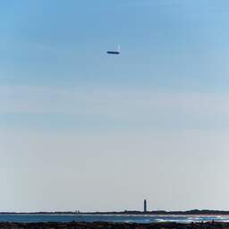
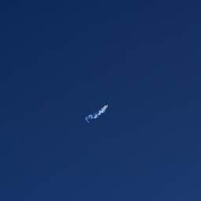
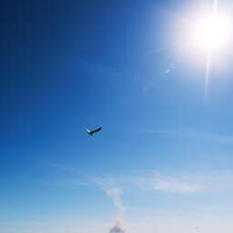
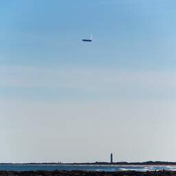
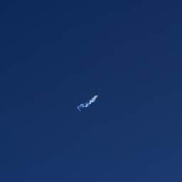
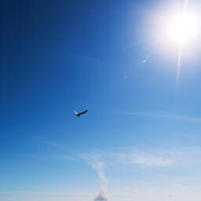
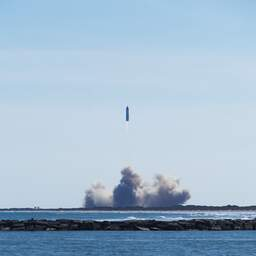
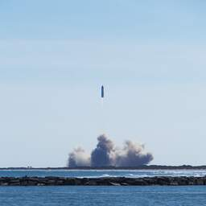

pages tagged ‘sn9’
This auto-generated listing selected 12 pages tagged with ‘sn9’.
I took these photos of Starship’s flight from Isla Blanca Park at South Padre Island, TX.
 





 



The remains of SN9 continue to smoke.

With only a single engine running, SN9 had too much momentum to correct with a single engine, and tipped too far the other way. At the moment of impact, SN9 was rolling and yawing far beyond the control authority of the single running engine.

Two engines should be running, and SN9 shouldn’t be quite this close to the ground.

Taken moments before engine ignition and (failed) flip maneuver.
SN9 vents liquid oxygen at apogee.
Flying creatures unite!

SN9 is visible in the center of frame.

SN9 has cleared the tower (aka SN10.)

Taken moments after liftoff. SN9 is on the right, and slightly higher than SN10 at this point.